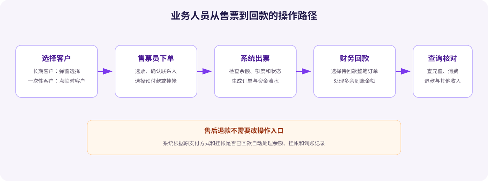

面向业务、财务和售票人员
业务操作培训 · V3.2
按角色和真实场景快速上手，重点说明要做什么、系统如何反馈，以及遇到异常怎么办。
0. 培训导读与全景流程
本功能适用于与景区先发生消费、再通过预付款或挂帐结算的散客合作业务。培训请按角色完成演练，不需要先理解后台技术字段。

▲ 业务人员操作全景流程（点击放大）
本期新增了什么
- 企业、个人长期合作伙伴档案
- 唯一的公共临时客户快捷入口
- 预付款与挂帐两类支付
- 挂帐订单回款状态
- 充值回款选择订单
- 其他收入与退款自动调账
与现有流程不同：合作伙伴订单必须先选择合作伙伴，确认出票时系统会再次检查合作伙伴状态、账户状态、余额和挂帐额度。
与现有流程一致：票型选择、游客信息录入、正常售后退款入口继续沿用现有散客票流程。
1. 合作伙伴管理员操作
场景一：建立企业或个人长期合作伙伴管理员
场景：业务已确认客户未来会持续合作，或客户需要保存预付款余额。
- 进入后台“合作伙伴管理”，点击新增。
- 选择合作类型“企业”或“个人”。
- 填写合作伙伴名称、联系人、联系电话。
- 搜索并选择景区内部对接负责人。
- 选择默认支付方式；状态默认启用。
- 填写备注后保存，系统自动生成账户号。
填写注意事项
- 合作伙伴名称全系统唯一，企业和个人最多25个字符。
- 联系人是合作伙伴外部联系人；对接负责人是景区内部负责该客户的员工，两者不要混填。
- 备注最多500字符；账户号无需人工填写。
- 默认支付方式只决定售票窗口默认选中项，不会调整账户资金。


场景二：禁用或删除合作伙伴管理员
- 不再合作但需保留历史时，使用“禁用”。
- 确认禁用后，该合作伙伴不再出现在售票选择弹窗。
- 只有从未产生充值、消费、退款记录的合作伙伴才可删除。
禁用不冻结财务处理：历史订单、回款、退款、额度记录仍可查询和处理。存在任何资金记录时，即使余额为0也不能删除。

2. 财务或管理员：账户与额度
场景：为合作伙伴设置挂帐额度财务 / 管理员
- 从合作伙伴列表点击“账户”，或直接进入合作伙伴账户管理。
- 在挂帐管理中找到合作伙伴，确认当前挂帐金额。
- 点击启用额度限制或调整额度。
- 填写调整后额度和调整原因，核对二次确认提示后提交。
- 通过“额度记录”检查操作人、时间和调整内容。
金额怎么看
- 挂帐金额0表示无欠款，-100表示欠款100元。
- 启用额度限制后，可用额度＝挂帐额度＋挂帐金额，最低为0。
- 禁用额度限制后显示“无限额”，原额度仍保留。
- 调低额度不会改变已有欠款，但可能导致暂时不能继续挂帐。


3. 售票员操作
场景一：长期合作伙伴购票售票员
- 打开售票页“临时/长期合作伙伴”标签。
- 点击“请选择合作伙伴”，使用名称、联系人/电话或负责人/电话查询。
- 单选合作伙伴并确定，检查右侧联系人、对接负责人、余额和可用挂帐额度。
- 选择门票并录入游客信息。
- 确认默认支付方式是否正确，可在预付款与挂帐之间切换。
- 点击确认下单，在支付确认弹窗核对票型、数量、金额和支付方式后确认出票。
下单前必须检查
- 预付款余额是否足够；本期不支持预付款与其他方式组合支付。
- 选择挂帐且启用额度限制时，可用挂帐额度是否足够。
- 页面显示的联系人和对接负责人是否与本次业务一致。
- 最终确认出票才是实际落单点，系统会在此刻重新检查状态和资金。


场景二：公共临时客户购票售票员
- 点击合作伙伴输入框旁的“临时客户”，不打开选择弹窗。
- 在右侧对接负责人输入框搜索员工，或直接手工填写本单负责人。
- 选择票型并录入游客信息。
- 确认支付方式为挂帐；临时客户不能切换预付款。
- 确认出票，订单保存本次填写的负责人。
公共临时客户没有预付款账户，也不显示联系人和账户余额。未填写订单对接负责人时不能出票。


场景三：出票被系统拦截售票员
| 系统提示 | 怎么处理 |
|---|---|
| 余额不足 | 联系页面显示的对接负责人充值，或在业务允许时切换挂帐。 |
| 可用挂帐额度不足 | 联系负责人调整额度或更换支付方式。 |
| 合作伙伴已禁用 | 停止下单，联系管理员确认合作关系。 |
| 账户已禁用 | 切换可用支付方式或联系管理员。 |
| 请填写对接负责人 | 为公共临时客户补充本单负责人。 |


4. 财务：充值与挂帐回款
场景一：预付款充值财务
- 进入“充值申请 → 账户充值”，点击充值。
- 搜索并选择合作伙伴；选中后系统才带出账户号。
- 选择充值类型“预付款”，输入大于0的到账金额。
- 填写备注并上传银行回款凭证等资料。
- 提交成功后立即增加预付款余额。
新增弹窗初始为空。失败不会产生充值记录，也不会调整余额；本期成功记录的状态统一为充值成功。

场景二：挂帐回款金额不足以平清全部财务
- 选择充值类型“挂帐回款”，输入实际到账金额。
- 点击选择待回款订单。
- 按整笔订单勾选，确保已选应回款合计不超过到账金额。
- 确认选择后回到充值弹窗，核对已选订单和剩余金额。
- 上传资料并提交，所选订单变为已回款。
选择订单注意事项
- 只能看到当前合作伙伴、挂帐支付、未回款且动态应回款金额大于0的订单。
- 不能对一张订单做部分回款；全选同样受金额上限控制。
- 订单总金额、已退款金额和本次应回款金额要逐笔核对。


场景三：到账金额超过平帐金额财务
- 固定合作伙伴：选择把剩余金额转入预付款或计入其他收入。
- 公共临时客户：每次仍必须选择订单，剩余金额只能计入其他收入。
- 提交后检查系统生成的两条独立充值记录。
- 打开任一详情，通过关联充值记录单号查看另一条记录。
如果临时游客希望多余款项下次继续使用，应先按订单金额平帐，再建立企业或个人长期合作伙伴，并把余额充值到新账户的预付款中。


5. 查询、核对与导出
场景：追查一笔钱对应哪张单财务 / 运营
- 进入资金流水，默认时间为最近一个月。
- 输入合作伙伴名称，必要时展开负责人和单据编号。
- 切换全部、充值、消费、退款、其他收入标签。
- 点击单据编号查看业务详情，或点击复制粘贴到核对材料中。
- 需要留档时按当前标签和筛选条件导出全部命中数据。
| 流水类型 | 单据 | 打开方式 |
|---|---|---|
| 充值 | 充值记录单号 | 查看充值详情并可复制 |
| 消费 | 订单号 | 另页打开订单详情并可复制 |
| 退款 | 售后单号 | 另页打开售后详情并可复制 |
| 其他收入 | 充值记录单号 | 查看其他收入充值详情 |


6. 售后退款需要知道什么
售后人员仍按现有入口发起正常退款，不需要判断财务如何落账。系统自动根据原支付方式和挂帐回款状态处理。
| 原支付情况 | 系统自动结果 | 业务关注点 |
|---|---|---|
| 预付款订单 | 退款金额加回预付款余额 | 资金流水显示退款和售后单号 |
| 挂帐订单未回款 | 挂帐金额向0恢复，应回款动态减少 | 全额退款后不再进入待回款订单 |
| 挂帐订单已回款 | 先退款加回，再生成等额负数调账 | 挂帐账户净变化为0，可通过充值记录追溯 |
合作伙伴订单在售票窗口“统计 → 销售记录/冲红申请”中只显示查看，不显示冲红申请；正常售后退款不受影响。


7. 常见问题与操作速查
| 问题 | 处理办法 |
|---|---|
| 临时客户能不能存预付款？ | 不能。需建立企业或个人长期合作伙伴后再充值预付款。 |
| 一笔订单能不能只回一部分？ | 不能。回款按整笔订单选择。 |
| 充值失败后去哪看失败记录？ | 本期失败不生成充值记录，应根据当次错误提示处理。 |
| 合作伙伴被禁用后还能退款或回款吗？ | 可以处理历史财务业务，但不能在售票窗口新选中下单。 |
| 为什么流水中有两条充值？ | 挂帐回款的剩余金额转预付款或其他收入时，本来就生成两条独立充值记录和流水。 |
| 对接负责人以后换人，历史订单会变吗？ | 不会。订单和充值记录保存当时的姓名、手机号或手工内容。 |
上岗前自查
- 会区分长期合作伙伴和公共临时客户
- 会判断预付款余额和可用挂帐额度
- 会在确认出票弹窗核对支付方式
- 会按整笔订单办理挂帐回款
- 会处理剩余到账金额
- 会通过业务单号追查资金流水